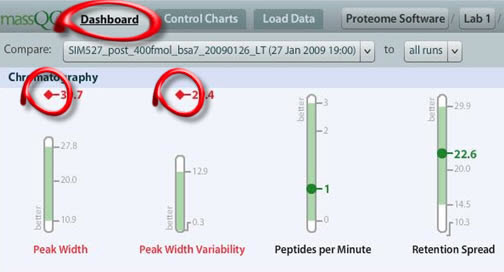
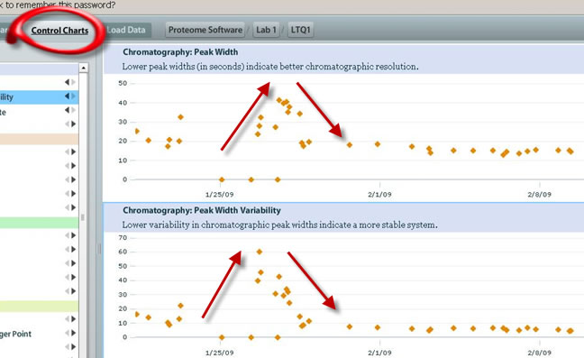
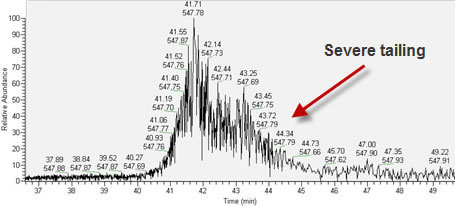
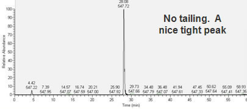
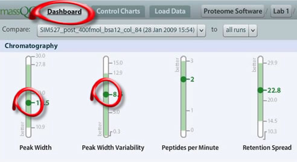

If you have operated an LC-MS system for any length of time, you have probably encountered this common issue: Peak Width Variability and peak tailing.
It is clear from the MassQC Dashboard that there is an issue with Peak Widths :

When you click on the Control Charts to get a closer look, a clear trend emerges:

Please note that after the LC column was changed the metric evens out and is stable for the next several QC runs.
In addition to using MassQC to view your LC-MS system performance, it can be helpful to go back and take a look at your mass spectra. Here is a picture of the extracted ion chromatogram before the column was replaced (note that the peak is zoomed in so that the tailing can clearly be seen):

After the column was changed, a nice, tight chromatographic peak is present (again, note the scale of the x-axis: although this peak is not zoomed, it is clear that the tailing is gone):

And, finally, after the column was changed the MassQC Dashboard shows the metrics are well within the accepted historical range:
